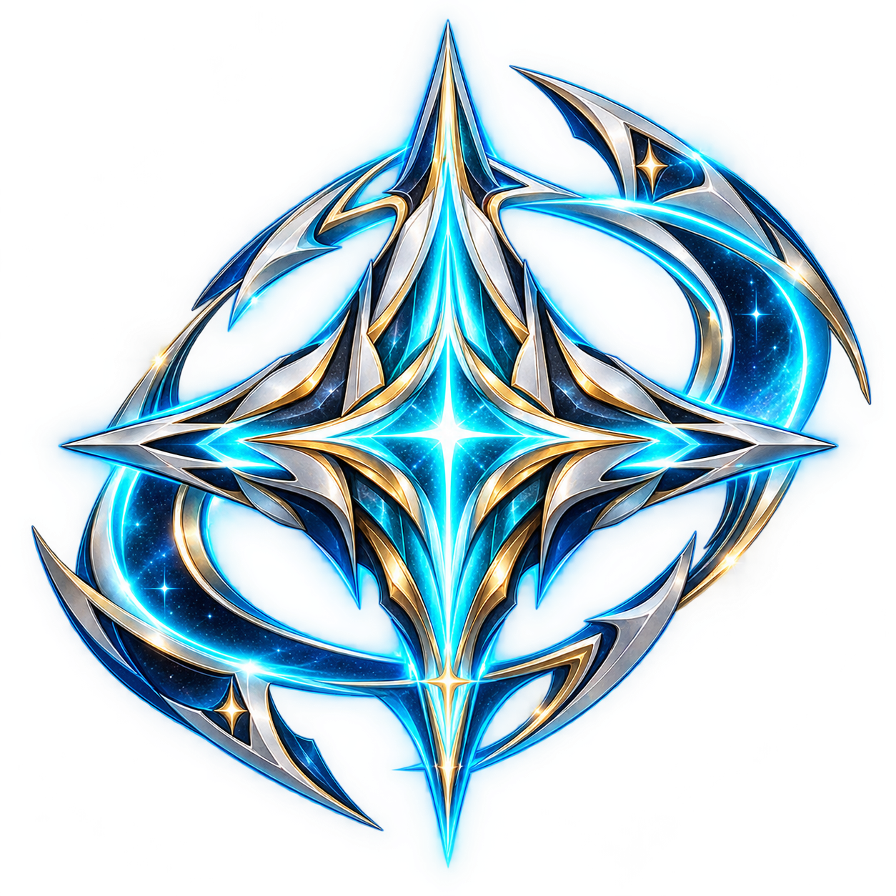
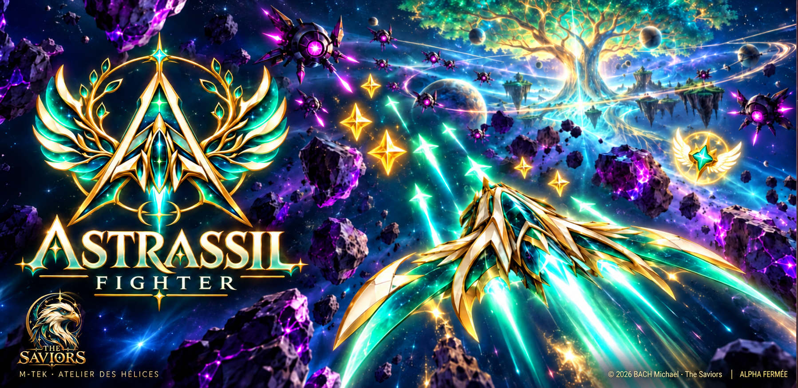
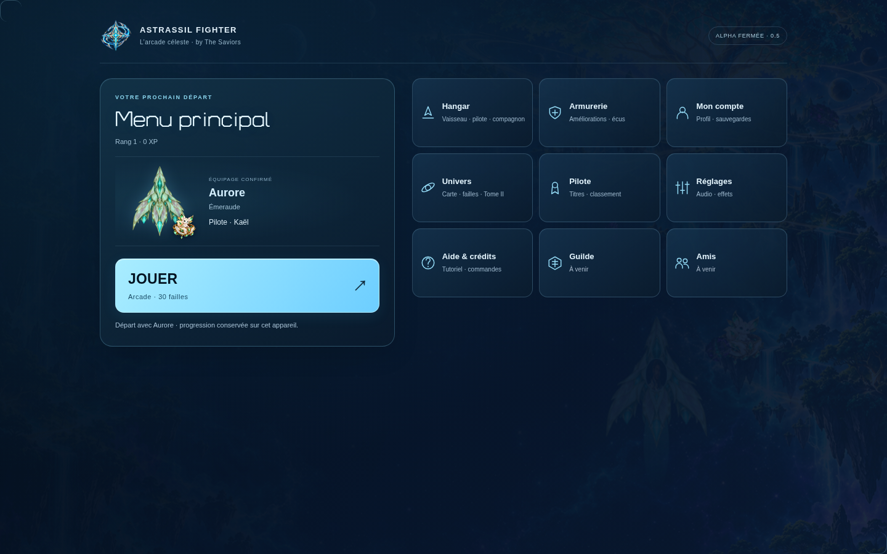
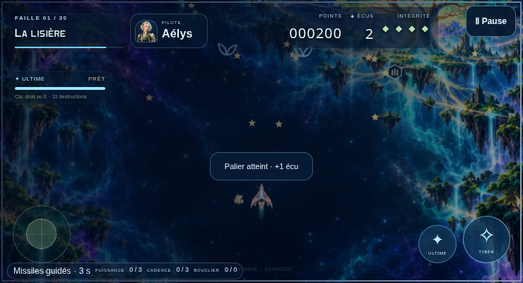
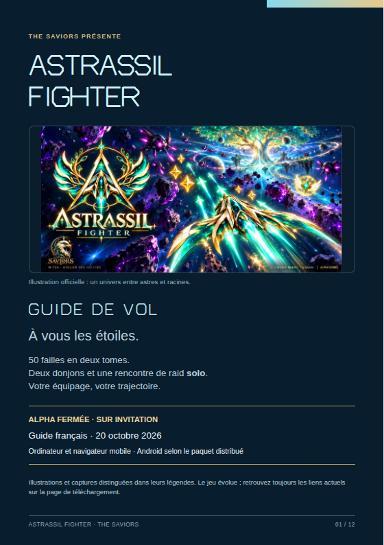

Entrez dans la faille
Parcourez les 30 failles du tome I, réparties en six chapitres, et apprenez les attaques de ses six gardiens.

ASTRASSIL FIGHTER Mon compteL’arcade céleste by The Saviors
ALPHA FERMÉE · SUR INVITATION
Astrassil Fighter, le jeu d’arcade spatial sur Android et navigateur. Tracez votre trajectoire entre les failles. Faites évoluer votre vaisseau et rallumez le ciel d’Astrassil.
Android · iPhone via Safari · Ordinateur

60failles · trois tomes
2donjons solo
1raid solo
L’arcade dans le geste.
La progression dans la durée.
UN MONDE ENTRE ASTRES ET RACINES
Parcourez les 30 failles du tome I, réparties en six chapitres, et apprenez les attaques de ses six gardiens.
Retrouvez l’atelier entre les failles pour améliorer votre vaisseau. Personnalisez son apparence dans le hangar.
Après les 30 premières failles, poursuivez vers les 20 failles du tome II puis les 10 du tome III. Les paliers s’enchaînent après sauvegarde ; la carte et les deux donjons restent facultatifs. Le raid solo se débloque à part.

PRENDRE SON ÉLAN
Mitrailleuse rapide ou missiles à tête chercheuse : ramassez la capsule et profitez de 10 secondes de jeu actif. Pause et atelier figent le compteur ; ensuite le tir normal revient.
Le menu montre votre vaisseau, sa livrée et le compagnon confirmés au hangar. Un aperçu annulé conserve l’équipement précédent.
Le guide interactif explique déplacement, tir, ultime et protection avant le vrai départ. Retrouvez-le dans Aide & crédits.

VOTRE PROCHAIN ENVOL
Alpha fermée : accès personnel contrôlé par le serveur. Google est disponible dans le navigateur. Pour retrouver une partie existante, ouvrez d’abord Mon compte et choisissez « Associer Google à mon compte actuel ». La vérification des nouvelles inscriptions par e-mail ou SMS et la liaison Discord ne sont pas encore disponibles.
Installez directement l’APK signé sur votre téléphone Android. L’alpha se distribue actuellement en dehors de Google Play.
Télécharger l’APK AndroidAutre accès : ouvrir la version Android sur GitHub ↗
Sur GitHub, dépliez « Assets » puis choisissez le fichier APK signé code 17.
Pour une mise à jour, conservez l’application et ses données. Android peut vous demander d’autoriser l’installation depuis votre navigateur. Le jeu est chargé à distance : les correctifs Web compatibles arrivent sans réinstallation. Un nouveau conteneur APK s’installe manuellement, sans installation automatique ; cette version n’a pas encore été testée sur téléphone physique.
Empreinte SHA-256 de l’APK signé :
b816fb24329483c13cf3a67f62a666aad993cb6abcfa722fb2e671408fac1eaaConsulter la version Android ↗Le lanceur Windows 10/11 x64 ouvre le jeu en ligne dans votre navigateur. Une connexion et un accès personnel restent nécessaires.
Télécharger le lanceur Windows ↓Sur iPhone, ouvrez le jeu dans Safari. Sur ordinateur, utilisez votre navigateur et retrouvez les commandes clavier et souris.
Ouvrir le jeu en ligneSur iPhone, il s’agit d’une version Web. Aucune application iOS native ni version TestFlight n’est distribuée pour le moment.
Hébergement d’alpha provisoire. Le PC qui héberge le jeu doit rester allumé et connecté. Une indisponibilité temporaire est possible.
Votre activation et votre progression appartiennent à votre compte. Gardez votre invitation et vos identifiants privés.
Installez l’APK ou ouvrez le jeu dans votre navigateur.
Sur le Web, associez Google depuis votre compte Astrassil existant pour retrouver la même progression. Une reconnexion ne réactive pas la clé.
LE LIVRET À EMPORTER
12 pages illustrées : commandes PC et tactiles, premier vol, atelier, hangar, campagne, journal, sauvegardes et précautions de confort.
Télécharger le livret PDFFrançais · A5 · édition du 20 octobre 2026 · environ 7 Mo

SOUTIEN FACULTATIF
Un soutien facultatif, au choix : 17 € une fois ou un abonnement de 17 € par mois, renouvelé chaque mois via Qonto/Mollie. Ce soutien ne donne aucun accès, objet ou bonus en jeu. Les conditions de paiement et l’annulation de l’abonnement sont gérées par le prestataire.
FAITES PARTIE DU VOYAGE
Une trajectoire trop difficile ? Un bug ou une idée ? Le Discord Astrassil réunit les testeurs pour échanger avec l’équipe et suivre les annonces de l’alpha.
Demandez l’invitation à l’équipe qui vous a remis votre clé. Les nouvelles fonctions de liaison de compte seront annoncées une fois disponibles ; ne partagez jamais vos identifiants dans un salon public.
Pour un signalement utile, indiquez votre appareil, la version du jeu, les étapes suivies et le résultat attendu.
Une capture aide souvent. Masquez votre clé, vos informations personnelles et celles des autres joueurs.
Préparer mon premier testAVANT DE DÉCOLLER
L’alpha reste soumise à des droits personnels contrôlés par le serveur. Télécharger l’APK ne donne pas un accès au jeu. Les comptes déjà activés sont conservés. Google est disponible sur le Web ; l’inscription directe avec validation d’e-mail et la récupération par e-mail attendent encore leur activation. Contactez l’équipe pour une nouvelle invitation.
Dans le navigateur où votre partie est reconnue, ouvrez Mon compte. Connectez-vous au compte Astrassil existant si nécessaire, puis choisissez Associer Google à mon compte actuel. Utilisez ensuite ce Google pour vous reconnecter. Une adresse e-mail identique ne fusionne jamais deux comptes. La connexion Google native dans l’APK Android attend encore son test sur téléphone ; elle n’est pas annoncée disponible ici.
L’alpha Android se télécharge directement au format APK. Elle n’est pas publiée sur Google Play. Sur iPhone, utilisez Safari : aucune application native iOS ni version TestFlight n’est encore proposée.
La progression est enregistrée sur votre appareil et envoyée automatiquement vers votre compte sur le serveur aux étapes importantes. En cas de coupure réseau, un envoi en attente est réessayé au retour de la connexion. Vous pouvez aussi envoyer une copie manuellement dans Compte et sauvegarde : vérifiez le compte et l’aperçu, confirmez puis attendez le message de réussite. Un combat en cours n’est pas un point de reprise.
Le serveur provisoire dépend d’un PC allumé et connecté. Réessayez plus tard et signalez l’heure et le message exact à l’équipe. Utilisez toujours le lien de cette page pour éviter un ancien QR code ou une adresse remplacée.
L’alpha propose 60 failles en trois tomes, deux donjons et une rencontre de raid en solo. Après la faille 30, l’histoire poursuit ses paliers jusqu’à 60. Les donjons et le raid solo restent des défis facultatifs ; le raid se débloque après la faille 50 et les deux donjons. La coopération, les clans et les raids en ligne restent à développer.
Les améliorations disponibles en jeu utilisent les ressources du jeu ; aucun achat d’objet en euros n’est activé. Un soutien facultatif est proposé séparément via Qonto/Mollie : 17 € une fois ou un abonnement de 17 € par mois, sans accès, objet ni bonus en contrepartie.